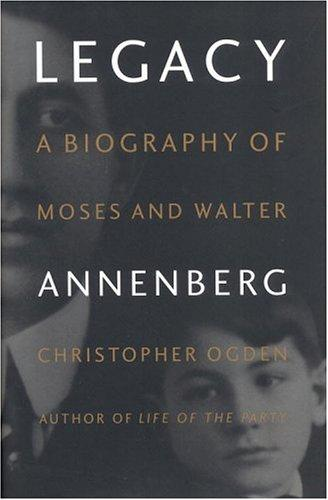

1999年，《时代》周刊资深记者克里斯托弗·奥格登（Christopher Ogden）出版了这部长达六百余页的传记，讲述安嫩伯格家族两代人的命运起伏。奥格登曾在伦敦和莫斯科担任驻外记者，此前已出版过撒切尔夫人和帕梅拉·哈里曼的传记，后者曾登上《纽约时报》畅销书榜。这不是一部寻常的富豪传记，而是一个关于帝国兴衰、罪与赎、以及一个家族如何在废墟上重建声誉的美国故事。
故事始于1885年。摩西·安嫩伯格（Moses Annenberg）随家人从东普鲁士逃离反犹迫害，移民至美国芝加哥。他从赫斯特报系的街头报贩做起，一路升至发行经理，凭借过人的精力和狠辣的商业手腕，逐步建立起一个庞大的出版帝国——1922年买下《每日赛马报》，1936年买下《费城问询报》，成为美国报业举足轻重的人物。然而帝国的根基并不牢固。1939年，摩西因逃税被联邦大陪审团起诉，最终认罪入狱，被判处三年监禁和八百万美元罚款——这是当时美国历史上最大的个人税务欺诈罚金。为换取儿子沃尔特免遭起诉，摩西独自承担了全部罪责。1942年，他因病获释，一个月后即去世。
三十四岁的沃尔特·安嫩伯格（Walter Annenberg）由此接过父亲留下的烂摊子。他面对的不仅是一堆亟需整顿的生意，更是一个被污名笼罩的姓氏。此后数十年，沃尔特以惊人的商业判断力和执拗的意志一步步完成了家族的救赎。1953年，他不顾财务顾问的反对，创办了《电视指南》（TV Guide）。这本杂志后来成为美国发行量最大的周刊之一，在七十年代每周利润高达六十万至一百万美元。加上《十七岁》（Seventeen）等刊物以及多家电视台和广播电台，三角出版集团（Triangle Publications）成为美国传媒业的庞然大物。
1988年，沃尔特以三十亿美元的创纪录价格将三角出版集团出售给鲁珀特·默多克，随即宣布将余生献给教育和慈善事业。他言出必行：先后向宾夕法尼亚大学、南加州大学、哈佛大学等高校捐赠数亿美元，又以五亿美元设立"安嫩伯格挑战基金"推动公立学校改革，向美国公共广播公司捐赠一亿五千万美元。他毕生捐赠总额超过二十亿美元。与此同时，他担任美国驻英国大使（1969—1974），并与妻子利奥诺尔在加州"阳光地"庄园（Sunnylands）先后招待了七位美国总统。他收藏的印象派和后印象派画作价值约十亿美元，去世后悉数捐赠给纽约大都会艺术博物馆。
奥格登获得了安嫩伯格家族档案和大量私人信件的完整授权。《纽约时报书评》称本书为"色彩丰富、观察敏锐的家族史诗……一部文笔优雅的叙事，既富有同情心又不失客观"（a colorful, acutely observed family epic...an elegantly written account that is sympathetic without being fawning）。《书单》杂志（Booklist）评价奥格登在记述沃尔特崛起的过程中，揭示了"商业精明与审美敏感的奇妙融合"，勾勒出"二十世纪晚期美国权力与特权的轮廓"。知名作家多米尼克·邓恩（Dominick Dunne）推荐此书时写道："读到懂得财富之责任的富人的故事，是多么令人愉悦。"（What a great pleasure to read about the good rich, who understand the obligations of being rich.）大卫·布鲁克斯（David Brooks）在《评论》杂志（Commentary）的书评中则指出，安嫩伯格家族的故事是"一个犹太移民家庭从东欧屠杀的阴影中崛起、攀至美国社会顶峰的经典叙事"。
对于关注商业史、家族传承和长期思维的中文读者而言，这部传记的价值在于它所呈现的并非简单的成功学叙事，而是一幅更为复杂的图景：财富如何积累又如何险些毁于一旦，声誉如何丧失又如何经由数十年的坚韧与慷慨重新赢得。书中对传媒产业竞争格局的刻画、对家族企业代际传承的记录、对慈善事业战略性规划的展现，都为理解美国商业社会提供了丰富的素材。沃尔特·安嫩伯格用半个世纪证明，真正的遗产不是金钱，而是一个名字所代表的品格。